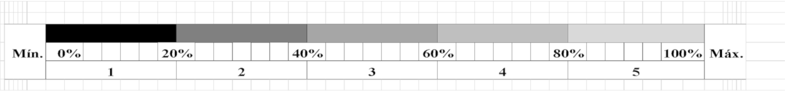

Informações sobre o aplicativo:
- Nome do aplicativo:Auditoria de Segurança Viária - Lista de Verificação para avaliação de segurança viária Híbrida (avaliação em campo e virtual) (sigla: ASV - H).
- Finalidade:Este aplicativo tem como objetivo auxiliar a realização da auditoria de segurança viária (ASV), por meio da identificação e do preenchimento das listas de verificação (checklists), sobre a inspeção da segurança da via/rodovia existente, visando a prevenção e a redução de acidentes.
Os auditores responderão o check list em uma Escala de 1 a 5, onde 1 corresponde a ausência total de determinado item do check list, e 5 corresponde que determinado item do check list encontra-se em sua totalidade. As escalas 2 a 4 corresponde as escalas intermediárias. A gradação das Escalas é mostrada na Figura 1.

Sendo que:
- 1 equivale a dizer que determinado está ausente (ou menos que 20%)
- 2 equivale a dizer que determinado item possui de 20 a 40%;
- 3 equivale a dizer a gradação sobre determinado item possui entre 40 a 60%;
- 4 equivale a dizer a gradação sobre determinado item possui entre 60 a 80%;
- 5 equivale a dizer a gradação sobre determinado item possui entre 80 a 100%.
Para preenchimento:
Velocidade da Rodovia: _____________________.
Local: ___________________________________.
Classe da Rodovia:_________________________.
Rodovia: ( ) Pista Simples ( ) Pista Dupla.
Trecho: ( ) Urbano ( ) Rural.
Esse aplicativo está dividido em 12 Grupos para ASV-Híbrida:
- Alinhamento rodoviário e seção transversal.
- Faixas auxiliares
- Intersecções
- Sinalização Vertical, Semafórica e Iluminação
- Sinalização Horizontal e Delineamento
- Dispositivos de Contenção e zonas livres de obstáculos
- Pedestres e Ciclistas
- Pontes e Bueiros
- Pavimento
- Estacionamento
- Drenagem Superficial
- Diversos
Autor:Prof. Rogério Lemos Ribeiro (Professor da UFU, e Doutorando da UnB na área de segurança viária, sob a orientação da Profa. Dra. Michelle Andrade.)
Email: rogeriolemosr@yahoo.com.br
Colaboradores:Daniel Moraes dos Santos e Pedro Ramos Krauze Diehl (Graduandos em Engenharia de Computação da EMC/UFG).